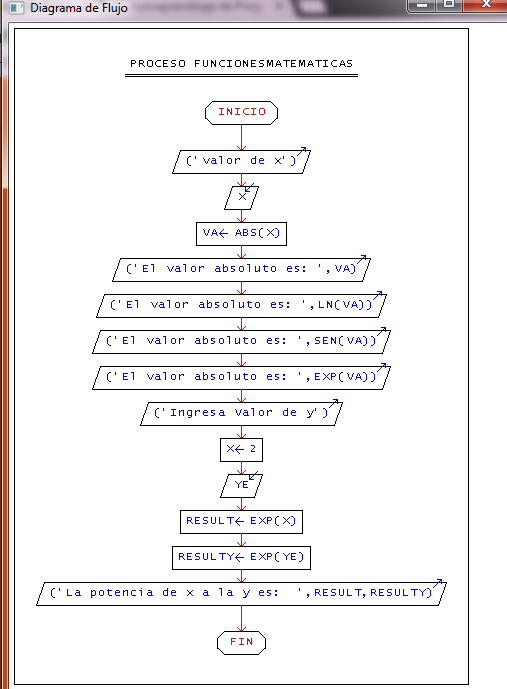
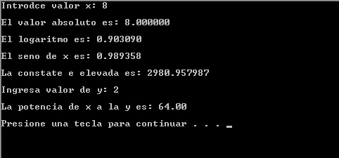

Se pretende que por x valor ingresado por el usuario indique cual es el resultado de las siguientes funciones:
logaritmo, seno, valor absoluto, valor exponencial y la potencia Y
Pseudocódigo
Proceso funcionesMatematicas
Escribir ("valor de x");
Leer x;
va <- ABS(x);
Escribir ("El valor absoluto es: ",va);
Escribir ("El valor absoluto es: ",LN(va));
Escribir ("El valor absoluto es: ",SEN(va));
Escribir ("El valor absoluto es: ",EXP(va));
Escribir ("Ingresa Valor de y");
x<-2;
Leer ye;
result<- EXP(x);
resulty<-EXP(ye);
Escribir ("La potencia de x a la y es: ",result,resulty);
FinProceso
Diagrama de Flujo

Código en Lenguaje C
Calcularemos valor absoluto, logaritmo, seno , constante e elevada y la potencia.
#include<stdio.h>
#include<stdlib.h>
#include<math.h>
int main ()
{
//Programa para clacular:
//Valor absoluto
float x,y,va,l,s,e,p;
printf("Introdce valor x: ");
scanf("%f",&x);
va=fabs(x);
printf("El valor absoluto es: %f \n",va);
//Logoraitmo
printf("El logaritmo es: %f \n",log10(x));
//Seno
printf("El seno de x es: %f \n",sin(x));
//Constante e
printf("La constate e elevada es: %f \n",exp(x));
//Potencia de x a la y
printf("Ingresa valor de y: ");
scanf("%f",&y);
printf("La potencia de x a la y es: %.2f \n",pow(x,y));
system("PAUSE");
return 0;
}
Salida del programa
